매일 오후 5~6시, 사주 궁합이 가장 좋은 단 한 명을 추천. 겉/속/성격 3축 + LLM 자연어 해설. Flutter 단일 코드베이스로 iOS·Android·Web을 동시에 지원하며, 먹·한지·인장 모티프로 사주의 문화적 무게를 UI로 전달합니다.
최근 20-30대 사이에서 AI 사주 서비스와 소개팅 앱 이용자가 동시에 급증하는 트렌드를 포착해 두 시장을 결합한 프로젝트입니다.
기존 소개팅 앱이 가진 세 가지 피로감 — (1) 외모 기반 무한 스와이프, (2) 매칭마다 매번 처음부터 자기를 어필해야 하는 부담, (3) 대화를 한참 나눠야 비로소 성향이 맞는지 알 수 있는 비효율 — 을 해결하기 위해, 사주로 성격·궁합을 사전 판단하고 잘 맞는 한 명과만 대화를 시작하는 1일 1매칭 모델을 설계했습니다. 사주 콘텐츠 소비자에게는 '결과를 보는 것'에서 '잘 맞는 사람과 실제로 대화하는 것'으로 가치를 한 단계 확장합니다.
BM은 단건 결제입니다. 매칭과 기본 사주 분석은 첫 2주 무료로 열어 두고, 상호 매칭이 되면 둘 중 한 명의 ₩1,900 결제로 두 사람의 채팅이 함께 열립니다. 결제하지 않은 쪽도 채팅은 무료로 이어 가고, 본인 시점 분석이 궁금하면 ₩900에 추가로 구매합니다.
자연어 해설처럼 LLM이 꼭 필요한 부분 외에는 사주 도메인 로직(천간·지지·지장간·60갑자·오행 상생상극·대운)을 백엔드에서 결정론적으로 처리하도록 풀 구현해 API 호출 코스트를 최소화했습니다.
한지 크림, 먹빛, 단청 주홍, 금 4색과 데이터 시각화 전용 오행 5색, 緣 인장 모티프로 디자인 시스템을 구성했습니다. 타이포는 Pretendard와 Nanum Myeongjo를 씁니다. 40개 화면을 모두 실제 앱에서 캡처해 12쪽 핸드오프 문서(v2.0)로 정리했습니다.
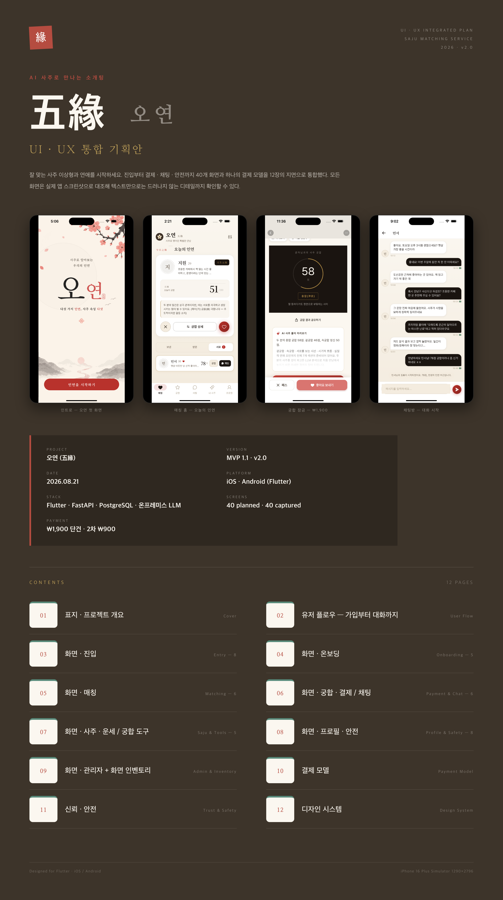
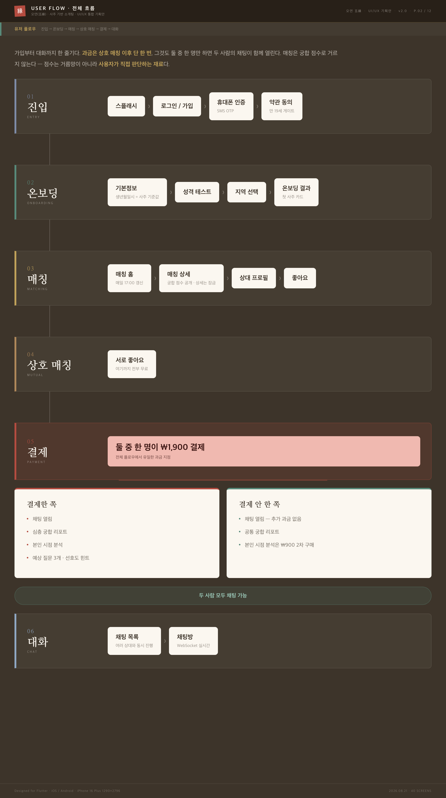
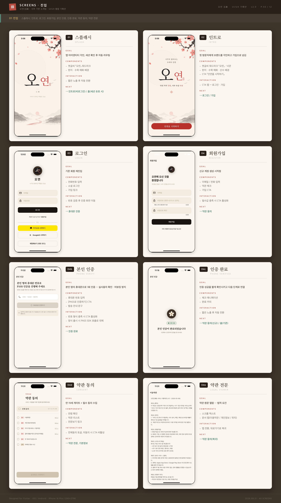
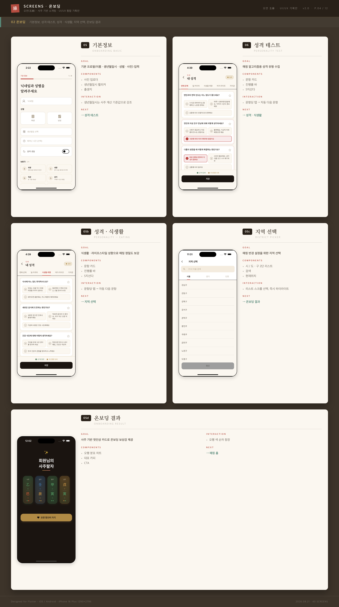
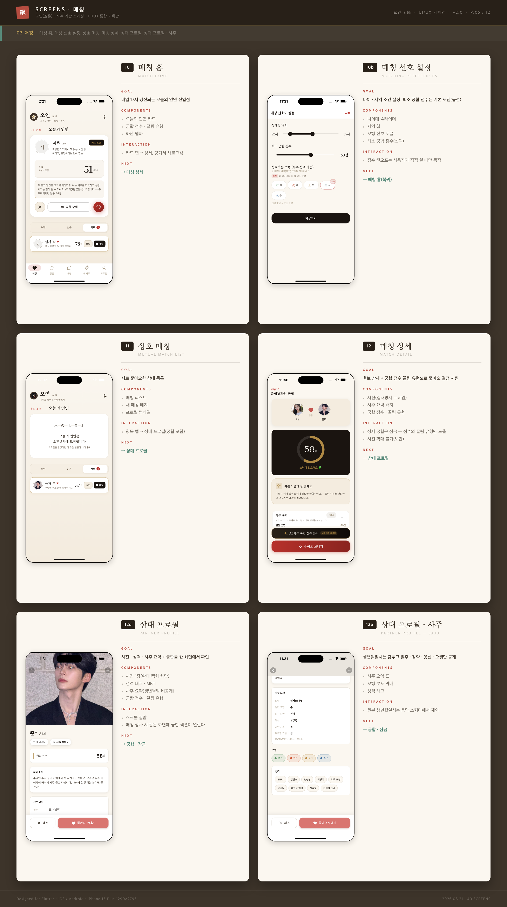
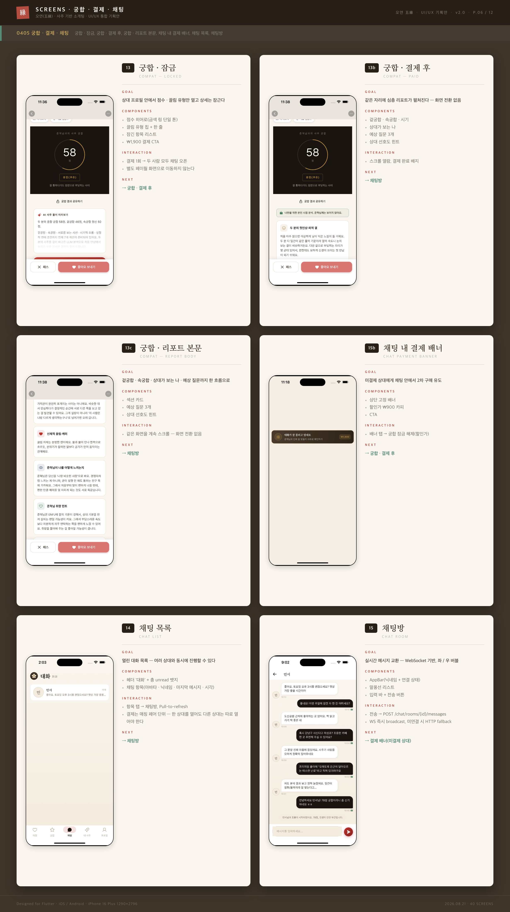
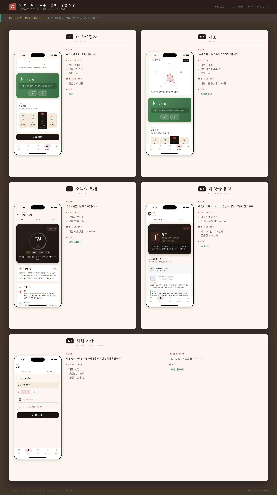
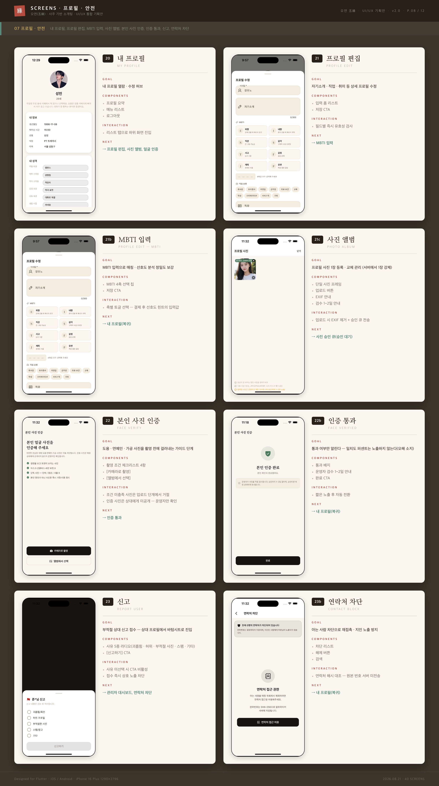
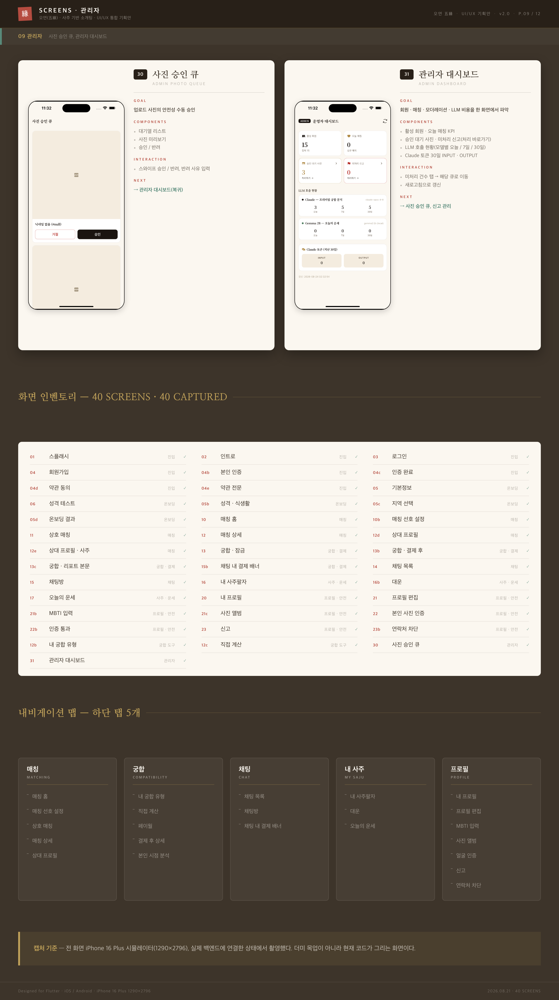
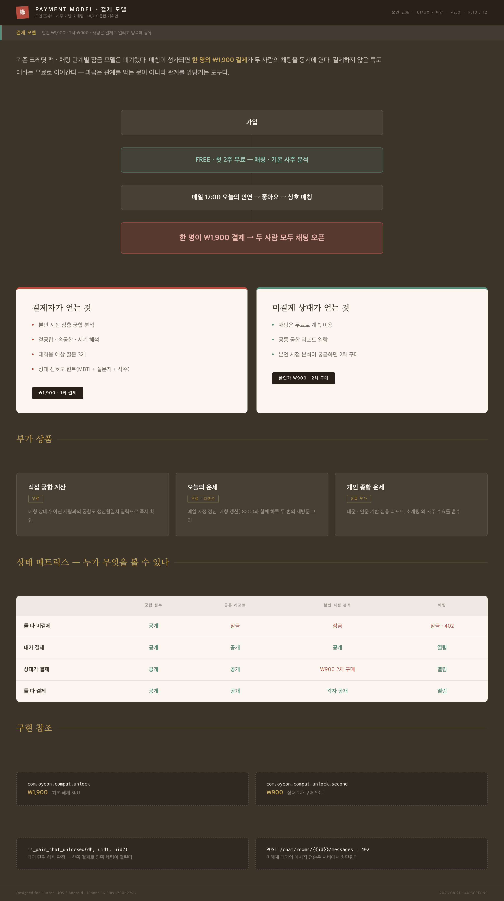
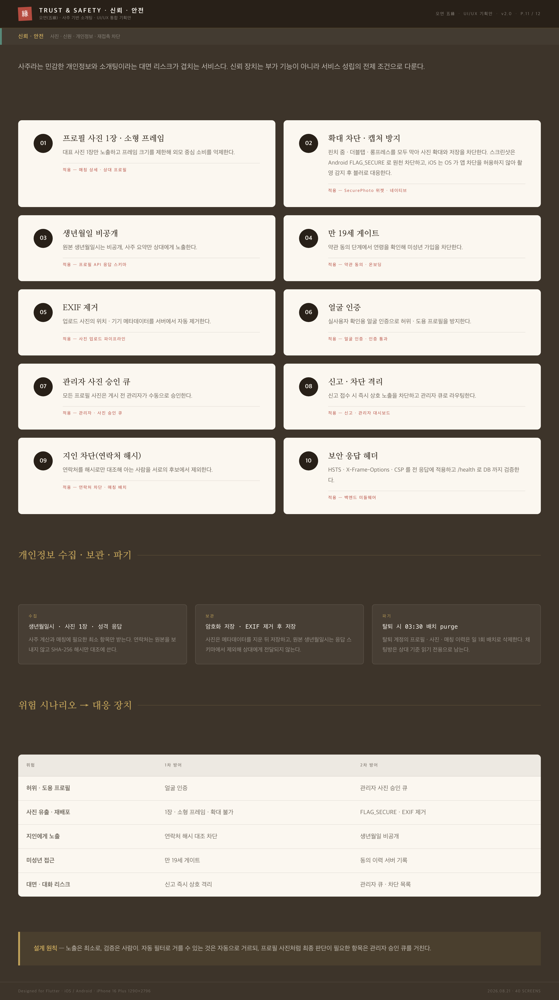
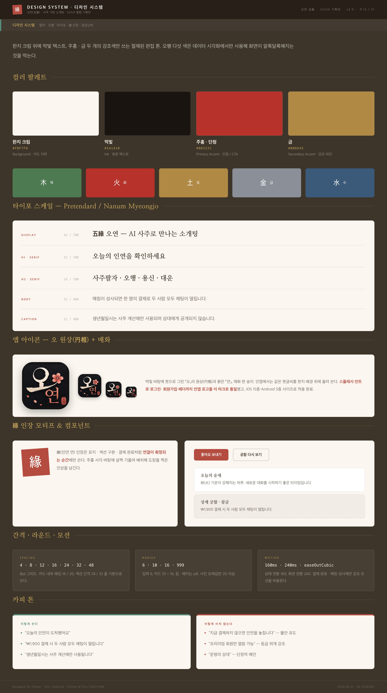
FastAPI · SQLAlchemy · PostgreSQL · WebSocket · JWT · slowapi
Flutter (iOS / Android / Web) · Provider · web_socket_channel · Phosphor Icons
Anthropic Claude API (claude-sonnet-4)
Docker Compose · 자체 디자인 시스템 (먹·한지·인장)